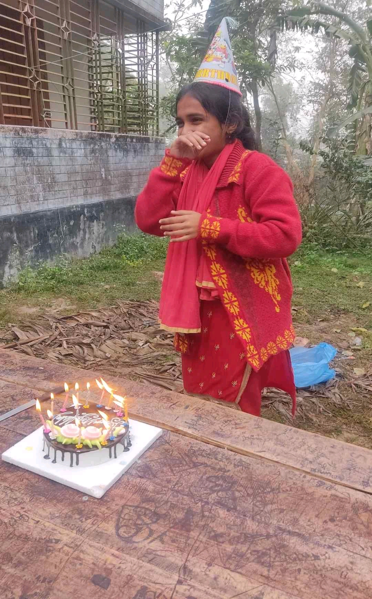

<!DOCTYPE html>
<html>
<head>
<meta charset="UTF-8">
<title>Birthday Journey</title>
<style>
body{
    background:#111;
    color:white;
    font-family:Arial, sans-serif;
    display:flex;
    justify-content:center;
    align-items:center;
    height:100vh;
    text-align:center;
    margin:0;
}
#box{
    width:90%;
    max-width:650px;
    padding:20px;
    border:1px solid #333;
    border-radius:10px;
}
button{
    padding:10px 20px;
    margin:10px 5px;
    font-size:17px;
    border:none;
    border-radius:6px;
    cursor:pointer;
}
.agree{background:#2ecc71;}
.disagree{background:#e74c3c;}
input, textarea{padding:10px; font-size:16px; width:80%; margin-top:10px;}
img{max-width:100%; border-radius:10px; margin-top:15px; opacity:0; animation:fadeInImg 1.5s forwards;}

.fade-in{
    opacity:0;
    animation:fadeIn 1.2s forwards;
}
@keyframes fadeIn{
    to {opacity:1;}
}
@keyframes fadeInImg{
    0% {opacity:0; transform:scale(0.8);}
    100% {opacity:1; transform:scale(1);}
}

@media only screen and (max-width:600px){
    body{padding:10px; font-size:14px;}
    #box{width:95%; padding:15px;}
    button{width:90%; margin:5px 0; font-size:16px; padding:12px 0;}
    input, textarea{width:95%; font-size:14px;}
    img{width:90%; height:auto;}
} 
</style>
</head>
<body>
<div id="box" class="fade-in">
    <h2 id="text" class="fade-in"></h2>
</div>

<script>
let s = 0;
let steps = [
"STEP 1:  আপনি কি সত্যিই এইটা দেখতে এসেছেন? 😏",
"STEP 2: যদি এসেই থাকেন তাহলে আর পিছনে যাওয়া নেই 😌",
"STEP 3: প্রস্তুত তো? 😉",
"STEP 4: তাহলে শুরু হোক 🎧",
"STEP 5: জীবনে কিছু মানুষ আসে… কিছু মানুষ থেকে যায় ❤️",
"STEP 6: আর কিছু মানুষ আসে এবং বিরক্ত করে  😌",
"STEP 7:  মানুষের অভিজ্ঞতা সবচেয়ে বড় শিক্ষক নয়? 🤔",
"STEP 8: ভুল ছাড়া কেউ সত্যি শিখতে পারে না? 😂",
"STEP 9: সুখ স্থায়ী হতে পারে না? 😌",
"STEP 10: চলেন একটু গভীরে যাই 🌊",
"STEP 11: মানুষ তার মনের মত পৃথিবী চায়? 🌍",
"STEP 12: যেখানে সবাই খুশি?",
"STEP 13: নাকি যেখানে কেউ কারো পার্সোনাল লাইফে নাক গলায় না? 😏",
"STEP 14: জীবনে কি করতে চান না? 🎯",
"STEP 15: বড় কিছু? নাকি শান্ত কিছু?", 
"STEP 16: যে মানুষ বুঝে তার সামনে সহজ হওয়া যায়, ঠিক না? 🙂",
"STEP 17:  আপনি কি নিজেকে বুঝান? নাকি অন্যকে? 😌",
"STEP 18: চিন্তা করবেন না… আমি কনফিউজড করছিলাম 😴",
"STEP 19: মানুষ সাধারণত ৩ টাইপ: চুপচাপ নিজের কাজ করা, চিল করা, Overthink করা 😐",
"STEP 20:  আপনি কোনটার দিকে আছেন? 😏",
// LIFE 21–65 (example)
"STEP 21: Overthink করলে লজ্জা নাই… অর্ধেক মানুষই করে 😑",
"STEP 22: ছোটদের বড় ভয় হলো 'কি ভাবে অন্যরা দেখবে?'",
"STEP 23: বড়দের বড় ভয় হলো 'আমি কি ঠিক করছি?'",
"STEP 24: ভয় তো দুইটাই বাজে 😒",
"STEP 25: জীবনে তিন ধরনের প্রশ্ন আসে: 'আমি কে?', 'আমি কি চাই?', 'কীভাবে পাবো?'",
"STEP 26: প্রথমটার উত্তর hardest 😐",
"STEP 27: যার উত্তর অনেকেই দেয় না…",
"STEP 28: সময়ের সাথে বদলে যায় 🙂",
"STEP 29:  আপনি কি নিজের future নিয়ে ভাবেন?",
"STEP 30:  present enjoy করেন?",
"STEP 31: কোনটাই ভুল না 🙂",
"STEP 32: মানুষ দুইভাবে বেঁচে থাকে: 'Mission' mode বা 'Vibe' mode ✨",
"STEP 33: Mission মানে goal, Vibe মানে peace",
"STEP 34:  আপনি কোন দিকে আছেন? 😌",
"STEP 35: যদি বলেন 'দুইটাই',  আপনি rare 😉",
"STEP 36: জীবনে  একটি কথা: সব মানুষ ভালো সময়ে থাকতে পারে, কিন্তু সঠিক মানুষের সঠিক সময়ে থাকা hardest 🙂",
"STEP 37: কারণ connection fate না হলে communication কাজে আসে না 😶",
"STEP 38: চ্লেন আরেকটা interesting জিনিস",
"STEP 39:  আপনি কি easily মনে  রাখেন মানুষের কথা?",
"STEP 40:  কাজ?",
"STEP 41: মানুষকে follow করা হয় ৩ভাবে: Respect, Emotion, Memory",
"STEP 42: Respect long term, Emotion fast, Memory permanent",
"STEP 43: deep কথা:  আপনি যাকে হাসান সেও  আপনাকে ভুলে যেতে পারে…",
"STEP 44: মানুষ অনেক সময় কৃতজ্ঞ হয় না? 🙂",
"STEP 45: কিছু মানুষ আসে সময় ভালো করার জন্য",
"STEP 46: কিছু আসে lesson দিয়ে চলে যায় বা রয়ে যায় 🙂",
"STEP 47: আর কিছু মানুষ আসে জীবনের গল্পে character হয়ে 😌",
"STEP 48: Guess what?  আপনি কোনটা?",
"STEP 49: এখন বলবো না 😌",
// FRIENDSHIP SECTION 50–85
"STEP 50: এখন আসল জায়গা 😌",
"STEP 51:  আপনি একজন Girl এবং বেশ interesting 🙂",
"STEP 52: Girls generally emotional? হুম… কিন্তু তারা শান্ত নয় 💅",
"STEP 53: Girls observe MORE than they talk 😉",
"STEP 54: চেহারা ভুলে যেতে পারে…",
"STEP 55: কিন্তু কথা মনে থাকে 😂",
"STEP 56: Friendship raises ৩টি gift: Comfort, Trust, Memory",
"STEP 57: Comfort rare, Trust expensive, Memory priceless",
"STEP 58:  বন্ধুত্ব সবসময় জীবনের সবচেয়ে বড় সমর্থন নয়?🙂",
"STEP 59: এই যে এতক্ষণ এলেন, ধৈর্য কম না 😉",
"STEP 60: শেষের দিকে যাচ্ছি 😌",
"STEP 61: Ready?",
"STEP 62: Sure?",
"STEP 63: Very sure? 😏",
"STEP 64: ঠিক আছে…",
"STEP 65: Almost…",
"STEP 66: আর একটু…",
"STEP 67: Promise এটা worth হবে 🙂",
"STEP 68: এখন last part 🎁",
"STEP 69: এই পুরো জার্নি আপনারর জন্য 🙂",
"STEP 70: জীবন কখনও কখনও অন্যায় হতে পারে? তাই না? 🙂",
"STEP 71: মানুষের আসল চেহারা বিপদে প্রকাশ পায়? 🙂",
"STEP 72: এখন special moment…",
"STEP 73: Ready?",
"STEP 74: Deep breath 😌",
"STEP 75: ৩…",
"STEP 76: ২…",
"STEP 77: ১…",
"STEP 78: 🎉 Ready for final message?",
// FINAL WISH SECTION 79–100
"STEP 79: Almost there…",
"STEP 80: Final countdown…",
"STEP 81: Brace yourself 😏",
"STEP 82: One last check…",
"STEP 83: Are you excited? 😌",
"STEP 84: Okay…",
"STEP 85: Deep breath…",
"STEP 86: Here we go…",
"STEP 87: 🎁 Ready?",
"STEP 88: Yes? 😄",
"STEP 89: Last step coming…",
"STEP 90: Almost done…",
"STEP 91: Get ready…",
"STEP 92: 1…",
"STEP 93: 2…",
"STEP 94: 3…",
"STEP 95: And…",
"STEP 96: Final Reveal coming!",
"STEP 97: Password input now",
"STEP 98: Remember:pass hint: IT is very easy...you know it...It is the name you may know..find it",
"STEP 99: Enter password…",
"STEP 100: Ready!"
];

const box = document.getElementById("box");

// Show current step
function showStep(){
    if(s >= steps.length){
        passwordScreen();
        return;
    }

    box.innerHTML = `
        <h2 class="fade-in">${steps[s]}</h2>
        <div id="buttons">
            <button class="agree" onclick="nextStep()">একমত</button>
            <button class="agree" onclick="nextStep()">ওকে</button>
            <button class="agree" onclick="nextStep()">ঠিক</button>
            <button class="agree" onclick="nextStep()">হ্যা</button>
            <button class="disagree" onclick="disagreeStep()">একমত নই</button>
            <button class="disagree" onclick="disagreeStep()">না</button>
            <button class="disagree" onclick="prevStep()">Back</button>
        </div>
    `;
}

// Normal next
function nextStep(){
    s++;
    showStep();
}

// Previous
function prevStep(){
    if(s>0){ s--; showStep(); }
}

// Disagree → shows temporary message, then allow next
function disagreeStep(){
    box.innerHTML = `
        <p class="fade-in" style="color:#ff9">Sorry 😅 ...একমত হন বা না হন, আচ্ছা যাইহোক শেষ পর্যন্ত এগোতেই হবে!</p>
        <button class="agree" onclick="nextStep()">Next</button>
    `;
}

// Password
function passwordScreen(){
    box.innerHTML = `
        <h2>শেষ ধাপ! Password 🙂</h2>
        <input id='pass' type='text' placeholder='Password লিখো'>
        <br><br>
        <button onclick='checkPass()'>Submit</button>
    `;
}

// Password check
function checkPass(){
    let p = document.getElementById("pass").value.toLowerCase();
    if(p==="kutta,,,," || p==="kutti,,,,"){
        box.innerHTML = `
            <h2>🎉 জন্মদিনের শুভেচ্ছা! 🎉</h2>
            <p>আজকের দিন আনন্দে ভরা হোক! 🥳</p>
            
            <button onclick="showFinalText()">Next</button>
        `;
    } else if(p==="jen,,," || p==="bandor,,,"){
        box.innerHTML = `
             <h2>🎉 জন্মদিনের শুভেচ্ছা! 🎉</h2>
            <p>আজকের দিন আনন্দে ভরা হোক! 🥳</p>
            
            <button onclick="showFinaltext()">Next</button>n>
        `;
    } else {
        alert("ভুল Password 😅 আবার চেষ্টা করো");
    }
}

// Final text for image route
function showFinalText(){
    box.innerHTML = `<p class="fade-in">এই ছবিটা আপনার জন্মদিনের আনন্দের প্রতীক 🎂✨। প্রতিটি মুহূর্ত আনন্দে ভরা হোক!
        
        পৃথিবীতে এসে ১৯ বছর শেষ করে ফেললেন..

আশা করি দিনটি ভালোই কেটেছে..
আশা করব যেন বছরটাও ভালো যায়..

নিজের যত্ন নিবেন..

হুম..
জন্মদিনের শুভেচ্ছা

ভালো থাকবেন.. 

আর নিজের প্রতি খেয়াল রাখবেন..

২০ বছরের একজন মহিলা হয়ে গেছেন..

অবশ্যই  হয়ত চাপ সৃষ্টি হবে আপনার উপর  পরিবার,, পরিবেশ.. 

নতুন অভিজ্ঞতা.. 

সবকিছুর জন্য প্রস্তুত হয়ে যান..

এবং ভালো কিছুর জন্যও নিজেকে তৈরি করে রাখেন...
হুম..
বা হয়ত  আমারও ভুল ভাবনায়...
বয়সে অভিজ্ঞতায় অনেক দিক দিয়েই আপনার চেয়ে অনেক ছোট..

আপনি বুঝেন সব ভালো..

চেষ্টা করে যান

নিজের উপর যেমন ভরশা রাখতেন রাখেন..

হার মেনে নিয়েন না..
বলার মতো অনেক কিছু থাকলেও সব বলা যায় না, কখনোই না...
যাইহোক আবারও জানাই জন্মদিনের শুভেচ্ছা আর দ্রুত বিয়ে করে দাওয়াত দেন</p>`;
}

// Final text for image route
function showFinaltext(){
    box.innerHTML = `<p class="fade-in">এই ছবিটা আপনার জন্মদিনের আনন্দের প্রতীক 🎂✨। প্রতিটি মুহূর্ত আনন্দে ভরা হোক!
        
        পৃথিবীতে এসে ১৯ বছর শেষ করে ফেললেন..

আশা করি দিনটি ভালোই কেটেছে..
আশা করব যেন বছরটাও ভালো যায়..

নিজের যত্ন নিবেন..

হুম..
জন্মদিনের শুভেচ্ছা

ভালো থাকবেন.. 

আর নিজের প্রতি খেয়াল রাখবেন..

২০ বছরের একজন মহিলা হয়ে গেছেন..

অবশ্যই  হয়ত চাপ সৃষ্টি হবে আপনার উপর  পরিবার,, পরিবেশ.. 

নতুন অভিজ্ঞতা.. 

সবকিছুর জন্য প্রস্তুত হয়ে যান..

এবং ভালো কিছুর জন্যও নিজেকে তৈরি করে রাখেন...
হুম..
বা হয়ত  আমারও ভুল ভাবনায়...
বয়সে অভিজ্ঞতায় অনেক দিক দিয়েই আপনার চেয়ে অনেক ছোট..

আপনি বুঝেন সব ভালো..

চেষ্টা করে যান

নিজের উপর যেমন ভরশা রাখতেন রাখেন..

হার মেনে নিয়েন না..
বলার মতো অনেক কিছু থাকলেও সব বলা যায় না, কখনোই না...
যাইহোক আবারও জানাই জন্মদিনের শুভেচ্ছা আর দ্রুত বিয়ে করে দাওয়াত দেন</p>`;
}


 
// Initial
showStep();
</script>
</body>
</html>
